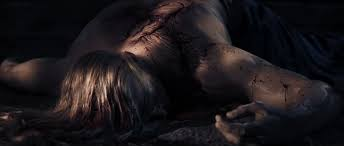

The Night of the Black Knives is the event most directly responsible for the sorry state of Elden Ring's world. Godwyn the Golden is the foremost casualty of the Night of the Black Knives. The Black Knife assassins target him directly. Prior to his spiritual death, Godwyn was known as the greatest of Elden Ring's demigods.
Among his other feats, Godwyn was able to subdue and befriend the dragons, a feat nobody else could manage. However, his death ends any active involvement he can have in Elden Ring's storyline. His decaying body is buried at the Edtree's base, spreading blight throughout Elden Ring's Lands Between and leading to the rise of Those Who Live in Death. (https://www.cbr.com/every-demigod-elden-ring-explained/)
Quotes on Godwyn
"In the Night of the Black Knives, Godwyn the Golden was first to perish"
"I see. Then you must kill me. For I am the companion of Godwyn, Prince of Death. I wished to be a mother to Those Who Live in Death."